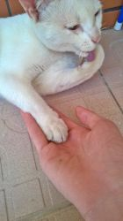

名称: 无标题 无名氏 [2015-12-20(日)19:53:27 ID:a6heuLJ] No.7373454
关于我养的猫变成一个猫耳美少女的事
名称: 无标题 无名氏 [2015-12-24(四)22:42:29 ID:Fiau5Cl] No.7412875
(・∀・)圣诞快乐，朱军
名称: 无标题 无名氏 [2015-12-24(四)23:33:24 ID:009tR4C] No.7413367
好甜(*´∀`)
名称: 无标题 无名氏 [2015-12-24(四)23:46:54 ID:KSp6IE4] No.7413518
>>No.7413367
圣诞快乐(＾o＾)ﾉ结果给丧尸们的贺图还是没画好( ´_ゝ`)旦
名称: 无标题 无名氏 [2015-12-25(五)09:17:08 ID:ekqw5As] No.7415941
噫，今天不更新吗
名称: 无标题 无名氏 [2015-12-25(五)10:35:35 ID:J1JTeGg] No.7416527
名称: 无标题 无名氏 [2015-12-25(五)10:36:44 ID:J1JTeGg] No.7416535

>>No.7416527
但她的名字不是猫，是渣渣哦。
名称: 无标题 无名氏 [2015-12-25(五)12:04:38 ID:G7S6zLr] No.7417215
我还以为不更新了，那个完字骗了我
名称: 无标题 无名氏 [2015-12-25(五)13:42:12 ID:M75sX9k] No.7418169
>>No.7416535
然而看描写，猫应该是一只姜黄猫吧
名称: 无标题 无名氏 [2015-12-25(五)14:16:53 ID:2WW4mA5] No.7418403
猫和人看到的世界有所不同 前
那是浩瀚的夜空，抬起头所望之处没有边际，白色的银河横穿过天空，啊，像勺子一样的是北斗七星。
小心翼翼地在银河两边寻找夏季的大三角，天上繁星众多，一不小心就会错过吧，猫想到。
要数完天空上的星星需要多少时间呢？
一年，十年，百年，还是一生都数不完？
微风轻轻抚过，大片大片的青草跟着摆动，不知名的花香味也飘散过来。
猫站在草地上仰望着星空，草地下一条河流静静地流淌反射着星光，就算有天数完了星星也依旧会听到潺潺的流水声吧。
接着轰鸣声响彻夜空和大地，风的声音流水的声音全都消失不见，一辆白色的列车沿着银河的方向行驶，冒着白色的蒸汽，发出“呜呜呜——”的响声。
它强有力的引擎声音一瞬间和猫的心跳重合产生一种令人怀念的感觉，好像乘着它就能回到那里。
猫有一种不能名状的感觉，无法解释，不能释怀，清澈的河同时倒映着星空和白色的列车，她回过神来只有泪水从脸颊滑落。
熟悉的身影出现在身边，猫的头上充满温柔的触感，但是等她回过头去那个人已经离开了，她拼命地想要追赶过去，四足并用追过去。
——铲屎的，等等我！
不要丢下我……一个人。
但是她却只能发出猫一样的叫声，毛茸茸的一团猫。
猫忽地推开被子，伸出双手想要抓住什么，心跳还在拼命跳动，奇怪的梦。
猫盯着天花板发呆翻了个身掉在地上，现在已经不是早上了。
猫揉了揉脸爬起来拉开窗帘，阳光已经开始变得燥热起来，几朵浮云悠悠地飘荡，她对着窗子伸了个懒腰，目光落在床头的电子时钟上，十点四十五分。
脚踩在木质的老旧地板上发出嘎吱嘎吱的声音。
厨房的冰箱贴着便条：冰箱里有鱼罐头，香肠面包，早饭自己热一下。
微波炉上也有张便条：禁止把西瓜放进去。
猫忍不住笑了起来。
饭桌上白色的盘子里盛着加了培根的蛋炒饭，盘子边上还有一张便条。
记得好好吃饭。
记得好好吃饭。
记得好好吃饭。
他居然写了三遍！
还有饭凉了就倒进锅里再炒一下。
“铲屎的！烦死了！”这人是哪里来的老妈子吗？
猫一把摘下纸条扔到一旁立刻把炒饭送进微波炉里。
等黑色的微波炉发出“叮——”的一声猫戴着厚实的手套把饭拿出来。
她坐在椅子上晃着细细的小腿百无聊赖地吃着饭。
加上阳台不到七十平米，一室两厅，拥有十几年的房龄，因为距市中心遥远再加上有些陈旧所以租金很便宜。
卧室的木质地板偶尔有一两块会翘起来，偶尔有蟑螂出现，经过上次的全面围剿也有段时间没看到了。
至少很安静。
附近有一座公园，公园的附近还有幼儿园，幼儿园的附近是一座小学，每天都能看到家长带着小孩从公园路过，路过小吃摊贩孩子会吵着要买，父母担心不卫生拒绝之后，孩子会变得失落一些，可能会羡慕没有家长接送而且零花钱的小孩吧。
转眼间过了中午，猫趴在沙发上翻着漫画书手机随意的丢在一旁，空调的冷气充满室内，猫打了个喷嚏关上空调打开窗户决定还是吹电扇。
不大的电风扇在茶几上不停地摇着头，猫用脚抵在一边，电风扇发出抗议一样转着身体碰掉了装着知了的塑料盒。
塑料盒径直掉在地上横在一边，里面的蝉已经连动都不动了。
猫咬碎冰棍用手指戳着盒子。
生长在土里只为了有一天能爬到树干鸣叫最后又默默地回到土里，在没人知道的时候出生在没人注意的时候落下，到底算是来过还是没来过？
不过他们落下的时候还回不到土里的话就太可怜了。
风徐徐吹来，夏日还在，知了从树上下来就忘了唱歌，只好回家了。
猫伸了个懒腰翻了个身从沙发上掉了下去。
“喵……”
墙上的钟表秒针不慌不忙地转圈，现在已经三点钟了还是才三点钟？
她站起来揉揉脸，回到房间打开衣柜关上连衣裙，头发在下面分成两股，穿上凉鞋，钥匙穿上线，没有钥匙就回不了家啦，猫边想边宝贝地把钥匙戴在脖子上。
最后她戴上宽沿的遮阳帽，猫耳痒痒的还是不习惯。
猫打开门，夏天的炎热还在持续。
名称: 无标题 无名氏 [2015-12-25(五)14:32:27 ID:Em8G3S0] No.7418499
|∀` )满足
名称: 无标题 无名氏 [2015-12-25(五)17:03:22 ID:XdgHr7I] No.7419646
这个圣诞礼物真是棒(｀･ω･)b
名称: 无标题 无名氏 [2015-12-25(五)18:16:32 ID:ekqw5As] No.7420227
>>No.7418403
( ﾟ∀。)
名称: 无标题 无名氏 [2015-12-25(五)18:33:57 ID:EhL99cs] No.7420366
圣诞节唯一的礼物( ´_ゝ`)不过好棒(〃∀〃)
名称: 无标题 无名氏 [2015-12-25(五)19:23:33 ID:ghOXi4P] No.7420797
>>No.7418403
真是赞，请问什么时候出书啊
名称: 无标题 无名氏 [2015-12-25(五)19:42:43 ID:zXRhAvD] No.7420977
(〃∀〃)满足
名称: 无标题 无名氏 [2015-12-25(五)19:46:56 ID:2WW4mA5] No.7421019
猫拎着塑料盒子找到公园，一路上吹来的带着夏日意犹未尽的闷热，进入公园的门口穿过小路，蓝色的和金色的眼睛一眨一眨寻找可以埋知了的树。
蝉鸣躁动。
河边的柳树，小路边巨大的梧桐，还未开花的桂花树，猫用手扶着宽大的帽沿思嘱着那一棵比较好，或者找到昨天捉知了的地方把他们放回去。
下午三点二十六分的公园只有三三两两的行人撑着伞以防被夺目的太阳夺走太多水分，以及晒到褪皮。
穿着白色连衣裙的女孩子，长长的细直尾巴从裙摆伸出来翘动，白净的脸蛋温顺的头发随着微风轻轻晃动，在画家的眼里无论哪一个夏天的下午这样一个女生都是漂亮的景致。
“哈喽哈喽！下午好啊！”
画家朝猫打了声招呼。
左顾右盼的猫听到声音回头看到昨天遇到的画家坐在一棵梧桐旁边的长椅上向自己挥着手，短发的女人露出微笑还是白色的衬衣蓝色的牛仔裤，腿上放着两本书，一把伞撑开在头顶隔开阳光。
猫也冲着她挥挥手。
“你在做什么？”画家问道。
“我在找一棵树，把他们送回去。”
猫指了指盒子。
“嗯，那你得找把铲子。”
画家想了想说。
猫才发现她没有铲子，尾巴沮丧地耷拉下去。
画家招了招手，那边有个沙堆。
猫看着画家，歪了歪脑袋。
每到附近学校放学都有小孩子过来玩沙子他们有，到时候找他们借就是了。
猫很怀疑是不是真的有人会上学还带把铲子。
现在嘛在这边等着他们来好了。画家又说道。
猫坐在长椅上盒子放在旁边。
你每天都会来这么？猫转头问旁边的画家。
画家素净的脸上略显苍白疲惫，顶着一副黑眼圈。
有时会来，昨天通宵赶工在家睡了一会儿就睡不着了只好跑这来了。画家拿起咖啡罐呷了一口。
难怪你会睡不着。猫想到。
反正也没灵感不如出来望望风。画家打了个大大的哈欠。
灵感？猫歪着头。
就是偷懒啦。画家笑着说，对了，你要不要看看这个，虽然是很久以前做的了。
画家拿起腿上的一本书递给猫。
那是一本关于冬天的绘本，冬眠的熊在冬天却失眠了，偶尔遇到路过的小动物熊就请他们到自己的树洞里喝茶。有时路过的是找不到青草的兔子，有时是找不到兔子的狐狸，一个人的时候就看着满天飘雪数雪花一片两片……直到雪也不下了。
熊很庆幸只有自己是冬眠的，不然睡不着的时候就只有看着雪和飞鸟度过漫长的冬夜，等到春天的时候连话都忘记怎么说。
终于发觉自己很久没睡觉的熊开始打起了哈欠，醒来的时候就能看到春天了吧？
熊睡着了。
有天找到青草的兔子和找到兔子的狐狸一起来找熊喝茶却发现熊还在睡觉，熊醒了揉了揉眼睛对兔子和狐狸说，我梦到好像春天到了。树洞周围已经绿草茵茵，五颜六色的花迫不及待地绽放着，兔子和狐狸对熊说，对啊对啊，现在是春天的春天，夏天了。然后三人又开始喝着茶。
猫看得津津有味。
熊失眠的时候会长黑圆圈吗？
一个人独自等待一件事发生是相当的寂寞。
一个人等待一个人回来时间都会变慢。
猫回想道，我就是一个人老等着另一个人。
不管念了多少次他怎么还不回来，时间也不会变得更快。
画家笑着说，那你等的那人一定很好的人，越是好的等起来就越慢。
咖啡罐终于空了，画家恋恋不舍地放下罐子。
猫又好奇地看着画家的另一本书，里面的内容只有画而已只言片语的文字用来介绍画家信息。
啊，这本画集啊。画家说，上次去画展朋友就送了一本给我。
猫接过画集，一页一页地翻看，写实的抽象的，浓墨重彩的画，和自己看的漫画书完全是两个世界的东西。
人类的画好难懂。猫迷惑地翻着画集。
不过本来人类就是难懂的动物，还创造了一个难懂的世界。
猫的世界没准只要吃的喝的磨爪子的东西就够了。
画家说，猫的世界还真够简单的。
猫继续瞧着，在后面的一页目光突然停住了，似曾相识的感觉从内心涌了出来，眼睛再也无法离开这副画。
这副画？猫指给画家看。
这副画啊，是猫画的哦，和你一样的猫，画家回答说。
连名字都不用留下，世人只要看过就知道那一定是她的画，找遍全世界再也找不到第二个。
我看到过。猫说，眼睛还在盯着这副画。
一模一样的景色能把所有的想法全部卷入其中。
同类……吗？画家说。
猫摇了摇头，我也不知道。
可是不是只有人类才能画画吗？猫问画家。
画家纠正说，有才能的人才去画画，那只猫就是其中一个。
她想起在业界的杂志上看到关于那只猫的采访，有人问她，画这副画的感想时她说，看到了，所以画了。
人类靠着想象力画出许多优秀的流芳百世的作品，而猫只是把看到的画下来。
看到了，所以画了。
她眼中的世界是什么样子。
如果能用她的眼睛去看这世界会看到什么？
“哪怕只有一秒也行真想看看她眼里的世界。”评委会的一位画家感叹地说。
能不能成为画家和是人类是猫没关系。画家，比如说我们认为猫的眼睛看到的都是灰色的，但是实际上你看到的呢？
猫思考着，手指放在唇边。
就那样呗，草是绿的天是蓝的，大海也是蓝的，虽然我只在电视上看过。
那么，我们看到的同一片蓝色的天空到底是不是一样的呢？画家看着天空淡淡地说。
咦？同一样的天空看起来有什么不一样？嗯……猫抱着胳膊望着青空，不一会抓着帽子不停地晃着脑袋陷入苦恼中，不同？哪里不同？都是一样的不是吗？这个问题好难想啊！
画家在一边发出轻轻地笑声了，好了又不是什么大不了的事。
我们看到的和她们看到的景色到底是不是一样的，永远都不会有答案吧。画家想。
“画家为什么当了画家？”
有句被谬传的名言说，天才是百分之九十九的汗水加百分之一的灵感组成的，而那百分之一的灵感远比百分之九十九的汗水更重要。
这句话据说也是谬传，留下名言的人根本无意以努力和天分做比较。
说不定是没有天分的人们为了放弃所找到的理由。
有的人努力一生也远远打不到比拼天赋的程度，更不用说比较了，不过能努力一辈子是相当厉害的。
“我么？大学毕业之后就随便找了份工作……最后发现我只有画画还凑合，我也懒得再找就当了画家，不过也只是画绘本了。”
画家想，小时候我最讨厌的就是画画可偏偏现在看着画画为生，是不是一种讽刺呢。
也曾经下过决心，反正我只会画画，干脆画出真正的艺术品来好了。
有些天分的人们在比拼着努力的时候那只猫已经站在天分之上纯粹地只是画画了吧。
只想把看到的画出来这种人，我连嫉妒的脚边都够不到吧。
在业界传闻中不管拿到什么奖得到什么褒奖脸上始终是一副淡漠的表情的猫。
好像从一开始就不在意任何评价，从一开始就什么都不在乎。
“失眠的熊的故事我很喜欢呀，感觉很像铲屎的，哈哈。”
功成名就对于猫来说没准比不上一条金枪鱼来得有价值，当然如果对她们说功名利禄能换很多条金枪鱼她们应该会是很高兴的，猫也是一种奇妙复杂的动物啊。
“是吗？谢谢了。”
有人能喜欢我的做的就很高兴了。画家想着。
不知不觉到了黄昏，沙堆旁边聚集着一群小孩在玩沙子，他们之中也的确有人带了铲子。
还真有人带啊。猫心想。
短发的画家和猫找到一棵松树下决定就在这里了。
挖出一个小坑把知了们放进去又盖上土。
从出生的地方回到出生的地方，中间那短暂的鸣叫也不是为了任何人，只是能够发出鸣叫所以鸣叫，就像猫一样。
我要回家了，说不定铲屎的就快回来了。
正好我也要回去睡觉了。
名称: 无标题 无名氏 [2015-12-25(五)20:00:41 ID:EhL99cs] No.7421123
更新了更新了(〃∀〃)
名称: 无标题 无名氏 [2015-12-25(五)21:43:38 ID:2WW4mA5] No.7421906
夜幕渐渐降临地时候，猫依旧一个人在等着一个人。
不到七十平的房子原来是这么空旷的。
猫随便吃了两口面包就盯着桌子上塑料盒子发呆。
月光原来是这么亮的吗？猫趴在桌子上戳着盒子，空空如也的盒子，知了们最后还是回去了。
太阳完全落山之后猫也没有开灯，只有清冷的月光散落进来。
夜空中繁星开始上线。
猫和猫做了一样的梦，梦中那浩瀚的星空，倒映着星空的河流以及行驶在银河的白色列车，只是一点不同，画里的是一只茶色的猫。
只是看着那副画好像就能听到河流的声音，列车那响彻天空的轰鸣，让人既怀念又有点难过，胸口被什么东西堵住了。
天与地仿佛连成一片边际隐没在地平线之中。
好像不经意间身边的人就会消失不见，没人再牵着我的手回家。
一个人仰望天空看着那辆列车缓缓驶过，自己只能躲在月影中，别离的不安在悄悄绽放。
列车去往离开了就回不去的地方。
胸口的闷痛逐渐扩散开来，连缘由也不知道地一点一点蔓延着。
电话没有响，早上的便条还在。
一个人要等一个人多久才行。
如果失眠的熊没有碰到兔子和狐狸是不是只有一个人度过漫漫长冬了，日升日落无边的黑夜。
一个人等待一件事是很漫长的。
回过头只有泪水划过脸颊滴落在桌子上。
等到那个人回来，猫已经在桌子上睡着有段时间她听见开门的声音立刻醒了过来。
监护人一脸疲惫摇摇晃晃地走进来。
“你要好好睡一觉了。”
她想到，他真的该好好睡一觉了。
知了也放了，圣诞节还有好远，所以现在你该好好睡一觉了。
他还想说点什么但是被猫用细细的手臂硬推着回到房间。
我吃过饭了，睡吧。
他还想再说点什么，猫立刻用他一记飞踢作为晚安的问候送他上床睡觉。
次日，猫起来的时候胸口的闷痛已经不见了，不知道被遗忘在哪个角落里，今天依旧是一个好天气。
猫看了一眼时钟走到他的房间用飞扑代替早安的问候。
“铲屎的，该起床了！”
现在北京时间早上八点半，你要迟到了。
晚上还能听到蝉鸣真是奇怪，他们都不下班回家吃饭吗？
某所大学的一间画室里，这个时间除了泡图书馆的，其他地方再无人烟。
一个女孩子仰面躺在地板上，茶色的头发茶色的三角形耳朵，身材过于幼小在学校走动经常被当成是小六的学生，白色的长裙上沾满了各色的颜料，小小的手上脏兮兮的，折断的画笔也躺在一边。
在她脚边是一副巨大的画布，画已经接近完成。
窗帘柔和地飘动，天花板上的吊扇缓缓转动。
身旁的饮料瓶子偶尔被风吹倒。
门外传来一阵脚步声有人要进来了，人还没进来淡淡的烟味已经飘进来。
男人顶着一头微乱的头发站在门口，四下里寂静无声，甚至能听到他嘴巴里香烟缓慢燃烧的声音。
“你还在这啊？”已经九点半了。
女孩子茫然地盯着吊扇，一圈接一圈旋转。
“烟味好大……”淡漠的声音回荡在画室中。
男人抓了抓脑袋把烟灭掉，找了空瓶子塞了进去，坐在茶发女生身边看着未完成的画。
“你还在画这副？”
茶发的女孩用左手碰了碰断掉的画笔。
“嗯，上次画的不够大……而且老是做这个梦。”
深邃的夜空，巨大的看不到尾巴的白色列车，流淌的河水，草地，只有一人看到的景色，清冷的月光照耀在画布上，再看几次也不会腻。
过了几百几千年我们都消失了她的画也一定还在吧。
“至少把灯打开吧。”他站起来寻找开关摁了两下，屋内依旧漆黑一片。
“灯坏掉了……”
他又回到女孩的身边坐下。
“还真是。”
女孩向半空伸出双手想要抓住……一只蚊子。
“画笔用烂了……颜料也用光了……我没力气了。”
他无奈地叹气。
“那是当然的吧，今天一天也没吃饭吧？”
其他的东西明天再去买新的吧。
“有啊，今天出去找蜻蜓的时候有两个女生给了我面包，啊，脑袋热热的……”
茶发的猫转头看向他。
他把手放在猫的额头上心情变得急躁，她的额头已经发烫了。
“这不是又发烧了吗？给你的电话呢？不是说难受就给我打电话的吗？”
她从口袋里掏出电话，举在他面前摁了摁开机键，电话屏幕一点反应没有已经没电很长时间了。
“啊……没电了。”
他想跟这种在接受采访发表获奖感言时说，我想吃圣代，草莓圣代的人真是没什么好说的。
之后还是因为连吃了十个草莓圣代进了医院。
茶色的猫突然用手撑起上半身说，我饿了。
男子给他以前的学生打电话，都是和猫一起生活的人多少都认识特别医院的医生。
“什么？！现在加班忙得不行没空？喂喂？臭小子敢挂我电话出了学校就不认人嘛。”
他抱起茶发的猫像抱着一个小孩子，猫靠在他肩膀上皱了皱鼻子，烟味好大。
“忍着点吧，先去急诊科吧。”
猫在他肩膀上抱得更紧一些，我是说抽烟有害健康。
“我想吃草莓圣代。”她闭上眼睛说。
“先去医院看医生！”
他抱着猫走在银色月光照耀的小路。
画画很开心吗？
嗯，很开心。
开心的不开心的只要画画就好了。
今天也是吗？
嗯，今天也是。
我想睡觉了，好困。
打点滴的时候别被疼醒就行。
啊，为什么这么晚了还能听到蝉鸣。
她淡漠的缺少感情的声音围绕这个问题打转。
静静地夜空下列车驶过。
名称: 无标题 无名氏 [2015-12-25(五)22:18:03 ID:dp59scl] No.7422197
( ﾟдﾟ)
(つд⊂)po！炒鸡甜阿